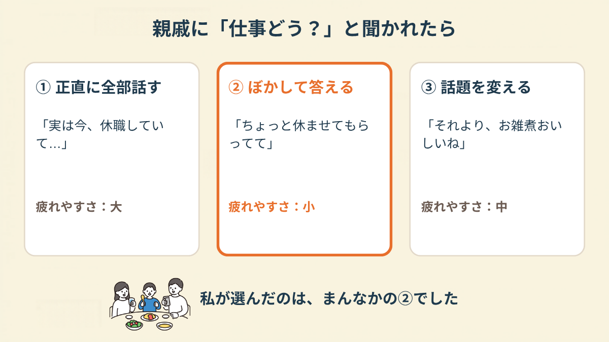
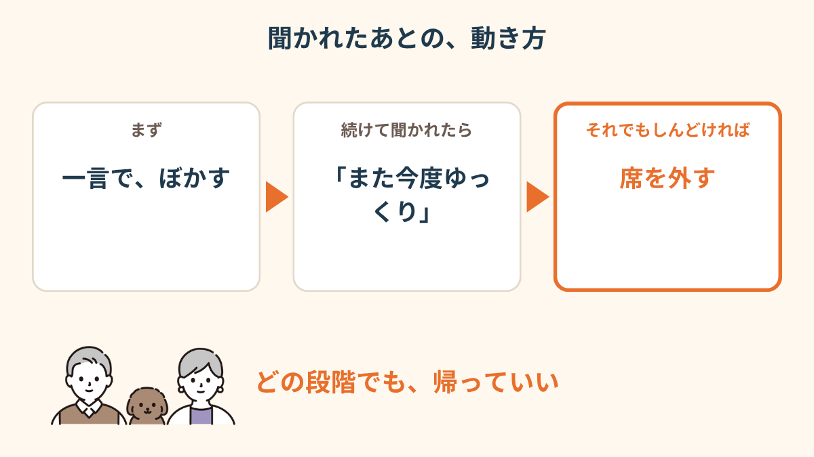
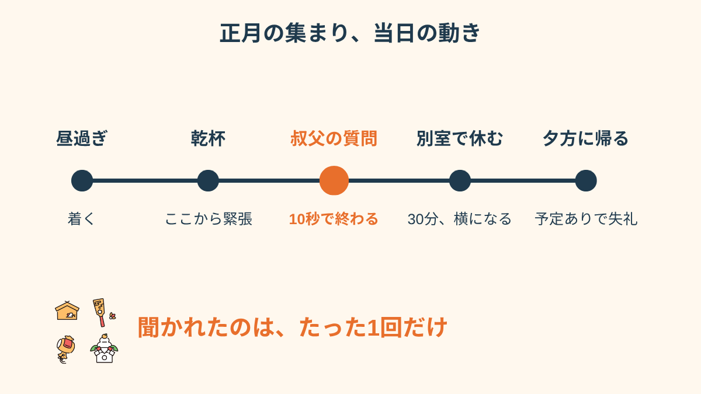
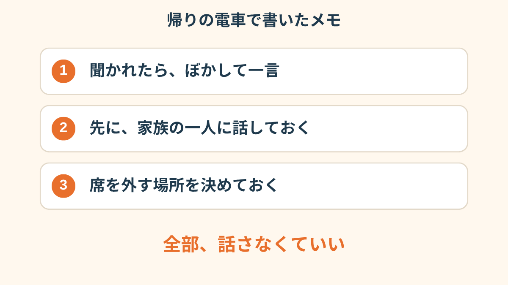
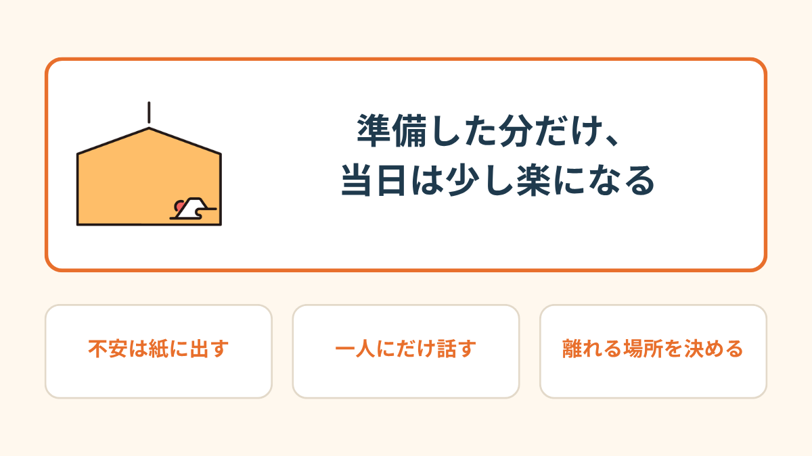
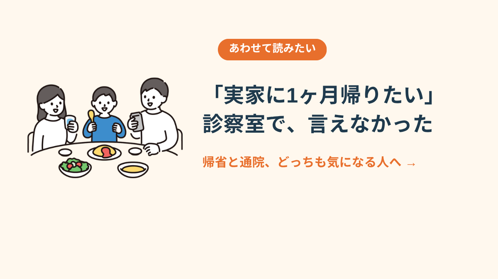

母からのLINEは、スタンプつきだった。
既読をつけたまま、返事を打てずに、その日は終わった。
休職して、5ヶ月目の12月だった。
母から届いた「みんな集まるよ」
うちの親戚は、毎年1月2日に祖母の家へ集まります。
叔父が日本酒を持ってきて、従姉妹が子どもを連れてきて、台所では母たちがずっとお雑煮の話をしている。
いつもなら、それがちょっと楽しみな日でした。
でも今年は、頭に浮かぶのはひとつだけ。
乾杯のあとに、誰かが「で、仕事どう？」と聞いてくる。
それだけが、3日前からずっと頭の中で再生されていました。
母には、休職のことを一応は伝えていました。
ただ、「体調を崩して少しお休みしてる」くらいの話で、どのくらい休むのか、親戚にはどう言うのか、そこは何も決めていなかった。
母のほうも、聞いてこなかった。
「お正月が近づくほど、胃が痛くて。親戚に何かされるわけじゃないんです。ただ、『ちゃんとしてる自分』の顔を1日やらなきゃいけないのが、もう無理かもしれないと思って」
返事を3パターン、紙に書いてみた
夜中に、チラシの裏へ書きました。
聞かれたら、なんて返すか。
最初に出てきたのは「正直に全部話す」と「嘘をつく」の2つで、どっちも無理だった。
全部話すには元気がないし、嘘は、あとで自分が苦しくなる。
そのあいだに、もう1つあった。
本当のことを、全部は言わないという返事です。

「ちょっと休ませてもらってて」。
これなら、嘘じゃない。
言い終わったあとに「そうなんだ」で済むかもしれないし、深掘りされたら「また今度ゆっくり」と言えばいい。
「正直に話す選択肢も、嘘をつく選択肢も、どっちもしんどくて。『お休みもらってて』だけ決めたら、少し息ができました」
先に、母にだけ話した
いちばん効いたのは、当日の台本よりも、母に先に話しておいたことでした。
電話だと声が震えそうで、LINEで。
「今、仕事を休んでる。親戚に聞かれたら、ちょっと休んでるって言うつもり。詳しくは言わないでほしい」

送ってから返事が来るまで、15分くらい。
スマホを伏せて、台所で水を飲んで、また見て。
母の返事は、「わかった。誰にも言わないよ。来られなかったら、それでもいいよ」でした。
読んで、ちょっと泣きました。
そして「来られなかったら、それでもいい」の一文のおかげで、逆に行けそうな気がしてきたんです。

当日、聞かれたのは1回だけだった
当日は、昼過ぎに祖母の家へ着いて、夕方には出る、と決めていました。
「夕方には予定がある」ことにして、母にだけ本当の理由を伝えてある。

乾杯のあと、案の定、叔父に聞かれました。
「で、お前、仕事どうなの？」
台本どおりに、「ちょっと休ませてもらってて」と言うと、叔父は「そうか、まあ体は大事にな」で、次の瞬間には従姉妹の子どもの話に移っていた。
あれだけ3日間、頭の中で再生していた場面が、10秒で終わりました。
拍子抜け、というより、ちょっと呆然としました。
「構えていたぶん、あっさり終わって、気が抜けて。そのあと一気に疲れが来て、30分だけ別の部屋で横になりました。母が何も言わずに毛布を持ってきてくれました」
帰りの電車で思ったこと
帰りの電車で、ぐったりしながら考えていました。
聞かれた回数は1回。かかった時間は10秒。
それなのに、準備に3日かけて、当日は体力がごっそり削られた。
でも、「何も決めずに行く」よりは、ずっと良かった気がします。
返事を決めて、母に伝えて、席を外す場所も決めていた。
全部うまくやれたわけじゃない。ただ、逃げ道を先に作っておけた。
それだけで、行ける日と行けない日の境目が、少しだけ見えました。



実家に帰りたい、と言えなかった診察室の話 →この記事に、聞いてみたいことはありますか？
「自分の場合はどうなんだろう」と思ったことを、気軽に書いてみてください。いただいた質問は個別にお返事したうえで、匿名で記事にすることがあります。